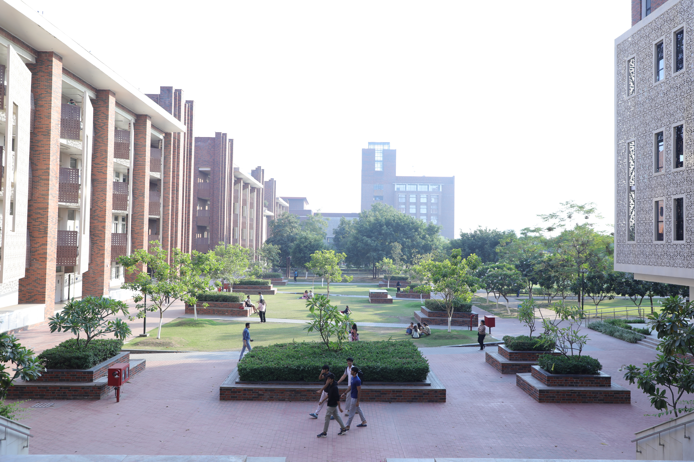

|
 |
Sandeep Sen
Professor, Computer Science Department, Ashoka University
Email: sandeep.sen@ashoka.edu.in
Research Area: Algorithms and Complexity Formerly in IIT Delhi 1991-2022 Ex Dean of Faculty, IIT Delhi (Aug 2016 - Aug 2018) Ex Head, Dept of CSE (Aug 2007 - Aug 2010) IIT Delhi webpage Biosketch
|